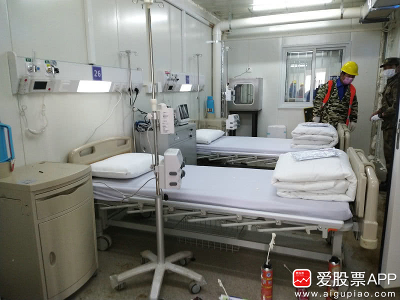

他感染了，可仍在网上给患者看病
原文链接 备份链接 2月1日，西藏自治区第三人民医院医生土旦朗杰观看病人胸片。目前，西藏唯一一例确诊的新型冠状病毒感染的肺炎患者在此住院治疗。觉果/摄 新华社CNML图片 作者 杨海 编辑 从玉华 李亮是武汉某三甲医院的病房主任，从1月 …
杨晨还在等通知。他在等待“十号令”带给他以及他的家庭命运的转机，他是一位“武汉病人”的家属。
让他有所期许的“十号令”，是2月2日发出的。按照“十号令”的要求，自通告发布之日起，对全市经发热门诊诊断有肺炎症状的发热病人和新型冠状病毒肺炎病人的密切接触者，将由各区安排车辆分别送至区集中隔离观察点。
在这之前，和很多武汉病人的家庭一样，杨晨经历了漫长得近乎煎熬的等待。在相当长的时间里，像他的家人一样的疑似病患，因为不能确诊，而被医院告知采用居家隔离的方式进行隔离。病症的反复与加剧，与武汉“封城”之后的交通管控相伴生，这些病患在寻找医院收治的路上，经历着奔波与煎熬。有些人，在这条路上，就已阴阳两隔。
而九省通衢的大武汉，此刻也是一个病人。疫情笼罩之下，这座反复上演人生悲欢的城市，其基本城市功能的维系，与留在这座城市中的人们的命运高度关联。需要治愈的，既是病患，也是武汉，以及与这座城市的命运维系在一起的那些城中的人们。
改观和转机正在越来越靠近。2月3日晚上，火神山医院收治了第一批新型冠状病毒肺炎病人。火神山医院的“兄弟”也即将于2月6日正式收治病人。尽管杨晨被社区医院告知继续等待，没有关于入院治疗床位的新消息，但没人可以否认，解决“收治”难的问题，武汉正在和时间赛跑。
2月3日，中央政治局常委会再次召开会议，在习总书记的主持下，这是约半个月内，中央政治局常委会已经第二次开会研究部署加强疫情防控工作。会议指出，要针对这次疫情应对中暴露出来的短板和不足，健全国家应急管理体系，提高处理急难险重任务能力。
医治武汉病人，所有人都在和时间赛跑。
求解收治难
2月2日上午，经过9天日夜酣战，火神山医院正式完工并交付使用，可以提供1000张床位，军队抽调的1400名医护人员已经到位，2月3日晚上，火神山医院住进了第一批新型冠状病毒肺炎病人。2月3日下午，记者探访已经挂牌的武汉火神山医院，医院内外分外紧张、忙碌，各班人马正在火力全开准备收治第一批病人。
火神山医院的“兄弟”雷神山医院也即将于2月6日正式收治病人，可以提供1500张床位。而在火神山医院完工交付使用的同一天，要求对所有疑似病患集中隔离的十号令发出。武汉疫情，转机乍现。
在这之前，这座城市中的很多人和家庭，经历了漫长的煎熬，与生死的考验。

火神山医院内一景 摄影/本报记者宋文娟
打120，排队；打社区电话，排队；找“武汉微邻里”，这个平台于1月25日瘫痪。
在“漫长”的等待中，武汉以家庭为单位的患者越来越多，有人熬到了有空床位的这一天，这时，他的家属已经一个、两个被感染，甚至全家被感染，还得继续寻找床位。有人等到床位时，已成重症，在大年初一于ICU病房去世。
2月2日上午，一位患者家属告诉《中国经营报》记者：“89岁的奶奶等不及，倒在医院走廊等待的队伍里，在大年初二离世，连去殡仪馆也得排队，遗体至今仍被停放在医院的太平间。”

2月1日，躺在医院发热门诊走廊里的病人 摄影/本报记者宋文娟
刀女士为叔叔一家的遭遇伤心得已起不来床。好不容易她77岁的叔叔于1月31日住进了医院，46岁的堂弟也病情病急，高烧不退，呼吸困难。“叔叔已经确诊是新冠肺炎，堂弟于2月1日也被医院确诊，现在没有床位可收呀。”
刀女士的叔叔家住武汉市白沙洲观澜小区，在武汉对新冠肺炎进行大面积、高频次防控之前，他做了一个心脏支架手术。“估计是去医院复诊的过程中感染的。”刀女士回忆。1月23日，叔叔开始出现身体特别不适，24日去武昌医院做CT与抽血检查，发现双肺已感染，病情危急，医院开了入院证，然而没有病床。
打120，排队；打社区电话，排队；找“武汉微邻里”，这个平台于1月25日瘫痪。此时照顾叔叔的是刀女士的堂弟，也就是患者的儿子，刀女士则帮助找病床、打电话以及向外界求助。
“我们狂打电话，社区还有120、市长热线，1月31日，叔叔终于住进了武昌天佑医院，可是我的堂弟在照顾我叔叔的过程中被感染了，连续几天高烧，2月1日被医院确诊（指确诊为新冠肺炎），现在到处找床位。”刀女士几乎痛哭。
由于堂弟被感染，担心两位病人无人照顾，他的姐姐赶回照顾，现在他的姐姐本人也发烧了。“现在叔叔家，只有婶婶照顾他们，婶婶也是70多岁了，这一家人怎么办哪？”刀女士已不想再讲下去，希望哪里有空病房的医院能早日救治他们。
他还在等待，但有的家庭，已经无法等待。
“爸爸和叔叔如今在奶奶的老房子里住着，隔离，他们还没有发烧。”2月2日上午，小朱对记者说，奶奶的遗体如今仍停放在医院的太平间，还没有转到殡仪馆。殡仪馆也在排队。
大学三年级的小朱正在感冒。“家里还有些吃的，如果没有发烧，我就暂时不跟爸爸说。”小朱的奶奶于1月26日，大年初二这一天去世，小朱不想让爸爸再担心自己。
小朱的奶奶89岁，因肺部感染呼吸严重困难，终于在1月24日等来社区安排的接送车送至医院，还没来得及确诊，更没有等到一张病床，她的奶奶就于26日在汉口医院的走廊里去世了。
“爸爸和叔叔一直在照顾奶奶，爸爸65岁了，我也蛮担心他。”数天前，小朱在接受本报记者采访时说。她很害怕，因为母亲早前已去世（与新冠肺炎无关），她非常担心再失去亲人。
“爸爸和叔叔如今在奶奶的老房子里住着，隔离，他们还没有发烧。”2月2日，小朱对记者说。
小朱想出门买点感冒药，可是她住的地方有点特殊，“我对面就是汉口火车站，旁边800米是华南海鲜批发市场，这一块是重灾区，周围没有药店开门”。
刘小煊则在家已经抗了8天，此时她每天只能清醒4个小时左右。“就是很累很累，想画个画缓解一下都不能，5分钟就累着了，累了只好昏睡。”此时，她在武昌自己家中，爸爸正在武昌西区医院住院，呼吸困难的症状缓解了一些；妈妈有好转，在汉口娘家住处隔离，仍在咳嗽。一直在小煊身边支撑这个家庭所有后勤工作的是她的老公，目前已开始低烧。
最初生病的是小煊的妈妈，她的父亲在照顾的过程中开始咳嗽，一开始并不发烧，不过咳嗽转为呼吸困难。
在做了CT、验了血之后，她的父母均被医院医生口头确诊为新冠肺炎，并先后出现浑身无力、呼吸困难、无法行动。在如此情况下，小煊并没有灰心，她做了一个分工，老公负责家庭消毒、饮食供应，她负责为父母去医院就医，如找医院、挂号、排队。为了减少父母暴露在医院这个交叉感染环境的时间，小煊通常是自己排队，估算时间差不多了再把父亲或母亲接过来。
1月25日，小煊曾接受本报记者采访，那时，虽然很难很累，但母亲在他们全家的共同努力下，病情好转，这让小煊不失信心。“不仅得保证患者的营养，家属也得注意吃饱，保持体力，这样才能与病毒战斗。”小煊对记者说。她同时还将一些护理心得在网络上分享，以鼓励更多患者与家属们。
不过1月26日起，小煊身体出状况，此后连续多日发烧，那时她依然在鼓励自己，吃药、吃饭，保持体力，一定能好起来，她也很纠结，不想去医院，不想被交叉感染。2月2日，已经在家连续抗病的小煊，虽然仍在坚持吃药，但明显感觉肺部不舒服。“就是深呼吸很痛苦，但小呼吸没问题。”她对记者说。
她正在为去看医生准备身份证。“身份证在汉口娘家，妈妈没办法送过来，我老公也不能上去拿， 爸爸妈妈就是在那里生病的。”
对于朋友的建议，她也在尝试，如中药、如按摩一些穴位，但一些想法让她不再坚持了。“我现在听我老公的。”她说，“我生病，也许是在照顾父母的过程中被感染的，之前没事，可能身体好是一方面原因，但有可能是因为病毒早已潜伏，没有表现出来而已。我现在要提醒家属们，在照顾患者的过程中不要因为身体暂时没事而大意，哪怕做了必要的防护，该检查还是尽早做个检查。”她说，现在最想做的事不是吃药不是找针，而是去医院得到医生的明确诊断。
和时间赛跑
疑似病患的集中隔离以及确诊病患的收治，都将改变这些家庭的命运。
2月2日晚间，武汉市新型冠状病毒感染的肺炎疫情防控指挥部召开专题调度会议，对确诊、疑似、无法明确排除新型肺炎的发热患者和确诊患者的密切接触者等四类人群强制实行集中隔离，通过征用一批民营医院、酒店、体育馆等场所有效控制传染源。目前武汉已在此前基础上再征用包括武汉民生耳鼻喉医院等民营连锁专科医院在内的27家医疗机构，可提供床位2183张，用于收治首次检测结果为阴性的疑似病例。2月3日晚，武汉市新型冠状病毒感染的肺炎疫情防控指挥部视频调度会透露，武汉国际会展中心等将改造成为3所“方舱医院”，共计设立3400张床位。
2月3日下午1点，《中国经营报》记者联系到此前求助的患者家属杨晨询问进展。杨晨告诉记者：“社区跟我提到过十号令，说是会根据病情严重程度进行相关的隔离诊治，但是具体落实方面，只是叫我等待。”
武汉市硚口区的一位社区工作者告知记者，现在武汉这个局面主要是床位紧张带来的，我们也没有办法，我们听政府安排。
早在1月26日，杨晨联系到本报记者，并告知爷爷和父亲均是此次新型冠状病毒肺炎的疑似患者，但想尽办法均没能住上院。“所属的定点医院告诉我们床位已满，无法收治，让我们联系社区上报。然而，社区又让我们直接去定点医院就诊。如此一来便成了死循环。”
杨晨告知记者：“由于家住在汉口硚口区，距离华南海鲜市场比较近。每年春节前，家人都会来到这里购买海鲜。今年爷爷也照例去买过海鲜，可能因此感染了这个病毒。”
杨晨提到，由于爷爷没有办法得到确诊，而全家人也无法作为密切接触者进行隔离。
武汉人田晓灵与杨晨有着一样的处境。1月30日，田晓灵在社交平台发起求助：“本人一直在上海，被拦在外边，通过亲戚才知道母亲被感染了新型冠状病毒肺炎，父亲开始体力不支。他们年纪都五六十岁了，到现在还没有得到有效救治。”
2月3日下午，记者联系到田晓灵，她告知记者，母亲还没有顺利住院得到治疗。
他们还在等待。十号令，正在和时间赛跑。
解决医护保障
在武汉病人当中，有一批“特殊”的病人，他们是医生，在救治病患的过程中被传染，在任何一次重大的公共卫生事件中，医护人员的保障问题，都是最重要的环节。17年前的非典如此，现在的疫情仍是如此。
政府在寻求解决这个问题的答案。其路径无外乎两条，合理安排医护人员的工作强度，以及配属足够充分、符合标准的医疗和防护物资。
截至2月2日20时，共有57支医疗队、6775名医疗队员分配至武汉市27家定点医疗机构。
来自北京的、对口支援同济医院中法分院工作的王医生对本报记者介绍：“新建病房一开张就源源不断地有重病人入住，病人非常多，病人数就源源不断地增长。”
“我们一个班6小时，穿上防护服，在病房都不能吃饭喝水，需要穿戴纸尿裤来解决内急。穿戴纸尿裤也是为了方便离开医院全身上下衣服能够全部销毁防止传染。”王医生说。
“结束工作后大家每个人的内衬衣服全都湿透了，为了防止感染病房里都不能开中央空调，武汉这边也没有暖气，脱防护服后都特别冷，也没有条件在医院洗澡。我们为了减少感染风险，想一些土办法如用垃圾袋和胶布自制鞋套。”王医生称。
但是，在这一切转机乍现之前，仍然有不少医护人员，在疫情诊治、治疗的过程中被感染。
田丽雯是武汉市中心医院某病区隔离病房的护士长。其在接受《中国经营报》记者采访时表示，一线很艰苦，大家都是拼着责任心在工作。病房主要是在收治疑似或者已经确诊的新型冠状病毒肺炎的患者。
田丽雯说：“我们医院大批医护倒了，我们现在是外科医生和护士在治疗呼吸内科疾病的病人。”
她介绍：“整个医院现在非常饱和，我们的工作量也是饱和的，床位数也是饱和的。其实按照规范流程来说，周围同事如果有确诊的，我们有过密切接触的医务人员都要去隔离观察14天，但是现在医院缺少医护人员，像我们这种没有感染、发病的，做CT检查目前还是好的，就没有去隔离，还要坚守在一线。”
“医院倒了一批护士，还有一批护士请假休息了。所以现在没有办法，到时候如果后续的支援力量来轮换，我们很可能就会一直坚持下去。”田丽雯告诉记者，大家最焦虑的其实就是这个问题，“我们临床科室的护士每天都问我：护士长，什么时候有人可以来换班？”
“我们有四五个同事先后都已经感染、然后确诊了，按道理来说，我们上个星期就应该隔离，但就目前的状况，好像真的没有人能够来换他们，我们也都还得坚持上班。”田丽雯无奈地表示，“医护人员如果出现了发烧等症状，我们也要拍肺部的CT，然后做核酸检测，确诊了的话，就需要住院隔离治疗，我们院里的医护人员住院治疗现在都能够保证。”
据了解，目前武汉市中心医院已接管武汉市汉口医院，从外科等科室紧急抽调了一些医务人员去支援。
“现在病人量太大，外地的医生护士团队也来了，但还是远远不够，病人都救治不过来。”据田丽雯介绍，现在医生是4个小时换一班，护士人数不够，要6个小时换班。“比如我是从上午8点到下午2点，这6个小时不吃不喝，不上厕所。”
对于接诊病人的流程，田丽雯告诉记者，病人接诊都是按照规范程序来接收和治疗。
除普通病人来看发热门诊外，通常现在是所在的社区医院先做筛选，然后发现有问题比如发烧严重的，按程序送到指定的发热医院门诊，门诊医生会根据筛选标准确定是否收治，然后入院之后都会做核酸检测。
对于门诊量的变化，田丽雯表示，这个不好直观对比。比如以前我们综合医院，所有的病种都有收治，但现在我们医院的一些病区完全只收治疑似或确诊的病人。“目前都还好，没有什么特别的情况，就是防护物资大家每天都会很紧缺，医院也在一直筹备，基本能满足，至少每天上班都有，只是说有时候质量好一点，有时候质量差一点。”
武汉市金银潭医院作为武汉传染病防治专业医院，最早接收确诊的新型冠状病毒肺炎患者，一线医护人员坚守的时间也最长，目前只收治确诊病例。
武汉市金银潭医院一位不愿具名的护士告诉记者，重症监护病房一个班8人，发了40件防护服。相关病例的收治入院和确诊都是医生安排，护士对具体情况不太清楚。“现在基本都是由患者所在社区居委会和社区医院安排一些疑似患者转诊，但很多社区执行不到位。”
据武汉市金银潭医院一位受感染的护士家属介绍，现在还没有离开重症监护室，说话也不太方便。在该家属沟通下，该护士婉拒了采访。
2月2日上午，华中科技大学附属协和医院第二批共6名被感染的医护人员集中出院。据央视网报道，这6名被感染的医护人员经过治疗后，临床症状得到有效控制，经专家组讨论符合出院标准。
据了解，截至目前协和医院15名被感染的医务人员中已累计有9人治愈出院，尚有6人还在隔离治疗。
记者辗转联系上了协和医院尚在隔离治疗的医务人员刘翔。据其介绍，目前身体状况都还好。“还在等着做最后一次核酸检测，阴性就可以出院了。”对于具体治疗过程等信息，该医护人员表示：“有纪律不能接受采访。”
1月25日，字节跳动宣布向中国红十字基金会捐赠2亿元人民币，设立“中国红十字基金会字节跳动医务工作者人道救助基金”，为抗击新型冠状病毒感染肺炎疫情而确诊感染的一线医务工作者提供资助。
《中国经营报》记者梳理发现，截止到2月2日，该基金共公布6批、57名受助者。确诊感染的医护人员中大多数来自武汉市金银潭医院、协和医院、中南医院等医疗单位。
其中，武汉协和医院共有22名感染新冠肺炎的医生和护士获得资助，武汉市红十字会医院有7名确诊医护人员获资助，同济医院和中南医院分别有6名确诊医护人员获资助，武汉市汉阳医院共有5名确诊医护人员获资助。
攻坚医疗瓶颈？
“收治难”“医患感染”的另一面，是疫情暴发以来，武汉医疗资源面临的极限压力。
2月1日，《中国经营报》记者探访位于“同济急救中心”一楼的发热门诊。门诊大厅坐满了前来输液、吸氧的患者，咳嗽声此起彼伏。由于安排不上床位，不少患者自带折叠床，在过道接受吸氧治疗。
这之后一天，火神山医院完工，十号令发出，又过了一天，火神山医院开始接收病人。这对于武汉而言，几乎是以空间，换取时间。而在这之前，面对疫情，武汉市的医疗医院早已达到极限。
“每天同济医院病人都很多，人流量很大。”一位正在同济医院就诊的患者告诉记者。
“我们动员了所有的医生都投入到一线来，除了内科医生、传染病医生，包括外科医生、麻醉科医生也统统进行培训，让他们都投入到一线来。”同济医院院长王伟曾介绍。
尽管如此，仍难以满足人满为患的发热门诊需求。
“这里很容易交叉感染，目前我和母亲在同济医院附近租房子住，每天去打点滴，打完了就回来。基本上打针的时候，我们也拿到外面打，不过医院里排队时间很长，排队的时间也是我们在医院待得最长的时间。”一位患者对记者说道。
杨晨一家也是被迫选择在家自行隔离。早在1月26日，他告诉记者，家中并没有隔离病人的环境。“两个房间，两个患者，五口人，你说我们怎么隔离？”
杨晨直言他的担忧：“我们家里没有隔离的环境，我也不知道什么时候会被传染。我在家照顾患病的家人，还需要出去买菜，无形中就可能导致更多的人受到病毒的威胁。”
2月3日下午，杨晨再度接受记者采访时，声音有些无力：“我只知道，昨儿我和奶奶去医院，已经诊断出肺部发炎。爷爷已经病危了，还没能做上核酸检测。”
身在上海的田晓灵则显得更为不安，两位老人自行隔离在家，无人照料。“由于两位老人感染了病毒，家里也没有私家车，自己给社区打了无数个电话，也没法有车可以派送他们去做核酸检测。”田晓灵提到，由于做核酸检测的人比较多，还需要排队，需要一天一夜的时间。“就算我打120将他们送往医院，那他们怎么回来？定点医院都满了，哪里还有床位？”
“基本的程序是先挂号、测体温、测血氧浓度、记录个人信息，然后叫到号后，找主诊医生看，医生开药或开检查单后，会开一个单子，去药房取药或去做检查。开药后配药也要再排一个队取药，配完药后再找负责打针的护士输液。”一位患者告诉本报记者。
多位在同济医院工作的医生告诉记者，不少医生感染新型冠状病毒肺炎就是在发热门诊感染上的。
担心万一自己感染传染给家人，也是出于工作方便的考虑，该院发热门诊医生下班后即集中住宿在医院对面的城市快捷酒店。
“我们几乎每个人都有暴露，但大家还是迎面而上。”一位肿瘤科医生告诉记者。

武汉同济医院发热门诊内一景 摄影/本报记者宋文娟
出现这一问题的原因何在？
一位头部三甲医院神经外科医生认为：“首先是床位，合规床位远远不够；其次是物资，消耗远大于供应。”对于检测试剂盒，武汉市四医院一位医生透露，其所在的医院只要住院，基本都会做核酸检测，病人要两次咽拭子阴性才能出院。但也有医生反映，其身边的人想做核酸检测都很难。
“想测很难，不一定是试剂盒不够。也可能是没那么多医生去做，忙不过来，或者没那么多机器空间。甚至不一定是没那么多人手，也有可能是没有那么多防护服，所以没有全副武装的人手，也不能让这些人去裸奔。问题应该是一环扣一环。”北京协和医院一位资深急诊科医生认为。
“检测了要住院，收纳能力有限，能住院了才能检测，检测也要走流程。我们一线很苦恼，陷入死循环。”
不过也有医生认为对于轻中症患者，是不是一定要确诊是冠状病毒感染，不一定是最重要的。它的主要问题并不是要抗病毒，而是对症处理，而这个症状要看它的轻、中、重。如果症状非常轻，就是隔离、多喝水，适当地用上抗病毒、抗感染的药物，保持睡眠、加强营养。这个病毒最容易侵犯肺部的黏膜细胞。
“目前住院治疗主要是对症治疗为主，让病人度过危险期，保持各个功能的稳定，缺氧的吸氧，有感染的加一些感染药、抗病毒药，电解质不全补一些电解质，丙球蛋白支持疗法，还可以用一些抗艾滋病的药如克力芝，不过这个药目前临床上数量还远不够。”另一位副主任医生也持相似观点。
“这个病是否难治取决于病人的基础状况，年轻人能扛就扛过来；老人继发，抗感染能力差一些；很少有小孩生这种病的。”一位在某三甲医院工作的医生告诉记者，其目前在隔离状态，近日其有个同事咳嗽，去拍了个CT，肺部有病毒样改变，而他作为曾密切接触这个同事的医生也需要隔离。
“一旦CT显示是病毒肺炎，基本上95%是新型冠状病毒感染者。医生们带毒的话就比较容易传染同事，毕竟不是完全隔离。”该医生说。
不过其同事并没有去做核酸检测。一方面是因为其同事目前身体已经恢复得差不多了，也不想做试剂盒了。另一方面，这位患病的医生担心做核酸检测有造成交叉感染的风险。
目前，发热门诊是采集口咽拭子做流感及新冠RT-PCR的。“取材的人也是高危人群，可能有传染性，搞不好取材的时候还会交叉感染。”前述医生告诉记者。
“武汉要求做核酸检测的人特别多，可能试剂盒供应不过来。即使是我们医生自身做核酸检测，也不是想做就能做，得通过科室领导层层审批才能做。另外，这个病比较邪性，即使好了之后还会交叉感染。所谓的好了，就是达到一个平衡。一旦这个病毒再起来，可能又来一遍。”该医生称。

武汉协和医院发热门诊内一景 摄影/本报记者宋文娟
这个武汉的冬天，时间和历史，会给出答案。
原文链接 备份链接 2月1日，西藏自治区第三人民医院医生土旦朗杰观看病人胸片。目前，西藏唯一一例确诊的新型冠状病毒感染的肺炎患者在此住院治疗。觉果/摄 新华社CNML图片 作者 杨海 编辑 从玉华 李亮是武汉某三甲医院的病房主任，从1月 …
原文链接 备份链接 文/杜圆圆 编辑/单一 根据预测，新冠肺炎或将在一周后，迎来新的爆发期。从去年12月初被发现，到目前为止，疫情已经持续了两个月的时间。 从始至终，医护人员一直是最前线的逆行者。武汉这座刚崛起的新一线城市，成了全中国最惨 …
原文链接 备份链接 【财新网】（记者 黄蕙昭 综合）疫情局势仍然严峻。截至2日16时，中国累计确诊病例14489例，死亡304例，疑似病例19544例。湖北地区继续保持高增速：目前，湖北省确诊病例9074例，其中黄冈市累计确诊1002 …
原文链接 备份链接 有多少疑似？ 326份CT检查报告单，除了60份不发热的其他病例，剩下的266份CT报告，136例显示“肺部感染，呈多发磨玻璃样高密度影”。1月22日，湖北省新华医院放射科医生李云华手颤抖着数完，沉默了许久。这些前一 …
原文链接 备份链接 3月21日。 封城第59天。这么长时间了！ 昨天那么大的太阳，今天突然就阴了。下午还下了点雨。这时节的春雨，对于院子里的树以及花，都还是很需要的。前两三天，武大樱花盛开，树下空荡无人，估计是记者拍了一些照片，同学群里便 …